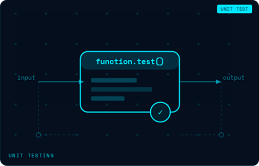

We at People Prime Worldwide help you find top-notch testing professionals. We specialize in manual and automated testing, performance testing, and continuous integration, making sure your software is the best it can be. We have experts in tools like Selenium, JMeter, and OWASP ZAP for security testing. No matter what your testing needs are, we can find the perfect people for the job. With our help, you can build a strong testing team that delivers high-quality, reliable software.

Comprehensive testing of software applications to identify bugs and ensure functionality....

Implementing robust backup strategies and disaster recovery plans to ensure data...

JMeter, Open-source tool for performance and load testing...

Integrating testing into the development pipeline to ensure early detection of issues...


Automating the release of software changes to production environments. Tools include...

Popular tool for API testing with user-friendly interface...

Identifying vulnerabilities in applications to protect against threats. Tools include...

Organizing and managing the testing process to ensure thorough coverage. Tools include:...